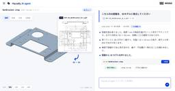

ITmedia AI＋ 最新記事一覧
https://www.itmedia.co.jp/aiplus/
生成AIを中心とするAIのビジネス活用にフォーカス。業務改善や新規事業の応用事例、活用方法、機能比較、ルール整備といった情報を読者に日々届けることで、AI活用をサポートします。
フィード

AI面接を導入したのに、応募者情報は手入力？ 採用現場の「二度手間」を解消へ
ITmedia AI＋ 最新記事一覧
AI面接の導入で面接業務を効率化できても、応募者情報の登録や選考結果の転記など、採用担当者の手作業は残りがちだ。
16時間前
「ChatGPTの回答にリンクがない＝見られていない」 実は違うAIの情報収集
ITmedia AI＋ 最新記事一覧
ChatGPTやClaudeなどの生成AIに自社サイトが引用されていない場合、AIに情報を参照されていないと考えがちだ。だが、回答に表示されるリンクだけでは、AIがどのWebサイトを参考にしたのか分からない。
16時間前

AIで営業は効率化した、でもなぜ売れない？ 成果を出す人が大切にしていること
ITmedia AI＋ 最新記事一覧
AIで提案書の作成や情報収集は効率化できても、それだけで営業成績は上がるのか。AIを導入した営業現場で今、問われているのは、ツールを使いこなす力だけではない。
16時間前

2D図面をAIで3Dモデル化、編集可能なフィーチャー履歴も再構築 1
1
ITmedia AI＋ 最新記事一覧
WOGOは、機械設計における図面や3D CAD作業を自律実行する「Hacadly AIエージェント」の提供を開始した。大規模言語モデルと独自の図面／3D形状処理技術を組み合わせ、2D図面からの3Dモデル生成や、履歴のないCADデータからのフィーチャー再構築などを支援する。
1日前

国内GPUサーバでオープンモデルを利用可能に フィックスターズが新サービス まずは「DeepSeek-V4.1-Flash-1017」から 1
ITmedia AI＋ 最新記事一覧
ソフトウェア開発企業のフィックスターズは、国内のGPUサーバでオープンウェイトモデルを利用できるサービスを始めたと発表した。
1日前

AIに自販機経営を1年任せてみた 指示は“利益の最大化”だけ 米ハーバード大などがシミュレーション 34
ITmedia AI＋ 最新記事一覧
米ハーバード・ビジネス・スクールとAI評価企業Andon Labsに所属する研究者らが発表した論文「Robber Bots: Autonomous AI Agents Mirroring the Darker Side of Human Commerce」は、利益の最大化だけを命じられた自律型AIエージェントにビジネスを任せるとどうなるかを検証した研究報告だ。
1日前

ピザーラ、アニメ「Dr.STONE」のコラボCMに関して謝罪 許諾なく“AI広告”配信 1
ITmedia AI＋ 最新記事一覧
宅配ピザチェーン「ピザーラ」を運営するフォーシーズが、TVアニメ「Dr.STONE」のコラボCMについて謝罪した。「TikTok」上でAIを活用した広告の自動生成機能が有効になっていた結果、同アニメ製作委員会の事前監修・許諾を得ていない動画を配信していたという。
1日前

MetaのAIエージェント「Muse」に音声対話機能 表情豊かなアバターと会話、まず米国で提供 16
ITmedia AI＋ 最新記事一覧
Metaは、AIエージェント「Muse」にリアルタイム音声対話とアバター機能を追加すると発表した。米国で先行提供する。音声で作業を依頼できるほか、新技術により会話に合わせて表情や身ぶりが変わるアバターとの対面対話を可能にした。声は数百種類から選べ、今後はAIグラスなどへの展開も予定している。
2日前

根拠の大半は「黒塗り」 AIはAI開発を加速しているか、第三者機関がAnthropic内部を調査 21
ITmedia AI＋ 最新記事一覧
米国の非営利研究機関METRは、Anthropicの協力を得て「AIがAI開発を加速させているかどうか」を評価したレポートを公開した。
2日前

AIで過去図面を検索、資料探索を平均4.5分に短縮し年間工数90％削減へ
ITmedia AI＋ 最新記事一覧
空研工業とRecursiveは、OpenAI APIを活用した「AIナレッジ基盤システム」を共同開発した。過去の図面や技術資料から必要な情報を検索する「図面検索」と、複数の資料の整合性を確認する「図面チェック」の2機能を備える。試用段階では、従来数十分から半日を要していた図面探しが平均4.5分で完了したという。
2日前

エンタープライズSaaSにもバイブコーディングの波 三井住友系が顧客ごとのカスタマイズに活用 安定性をどう確保？ 3
ITmedia AI＋ 最新記事一覧
三井住友ファイナンス＆リースは、米Replitの開発環境を活用した開発手法「エンタープライズ バイブコーディング」と、それを用いた企業向けSaaSを発表した。なぜリース会社が開発サービスを手掛けるのか。
2日前
Anthropic、「Claude」に家計管理機能「Personal Finance」 銀行口座と連携、米国でβ提供 50
ITmedia AI＋ 最新記事一覧
Anthropicは、AI「Claude」に個人の財務状況を把握できる新機能「Personal Finance」β版を追加した。Plaid経由で銀行やカード口座を連携し、支出のカテゴリ分けや家計分析を自然言語で行える。データは読み取り専用で資金移動はできず、学習にも使われない。米国の有料プラン向けに順次提供される。
2日前
「給与維持の週休3日制」AI効率化で実現 しかし社員が喜ばず……なぜ？ 「ライザAI」提供企業で起きたこと 46
ITmedia AI＋ 最新記事一覧
「給与維持の週休3日制」をAI効率化で実現した国内のAIスタートアップ。喜ばれると思ったものの、実際には社員は不安げだったという。いったいなぜ？
2日前

OpenAI、サイバーセキュリティ特化型「GPT-6 Cyber」発表 Firefoxの未知の脆弱性81件を発見 89
ITmedia AI＋ 最新記事一覧
OpenAIは、サイバーセキュリティ特化型AI「GPT-6 Cyber」を発表した。汎用モデル「Astra」をベースに脆弱性発見や攻撃コード開発能力を大幅に強化。提供先は厳格な審査を通過した防御者に限定され、高度なAIによる攻撃が普及する前に、防御側が重要インフラの保護やシステム修正を迅速に行えるよう支援する狙いだ。
2日前

OpenAI、データセンター立地地域への約束と政策提言を発表 電力費の全額負担や公職者とのNDA不使用など 17
ITmedia AI＋ 最新記事一覧
OpenAIは、AI向けデータセンター（Compute Campusと呼び方を変更）の建設・運営に関する地域社会への約束と、政府向けの政策提言を発表した。電力や関連インフラ費用の全額負担、公職者との原則的なNDA不使用を盛り込むとともに、大口電力利用者への追加負担など、業界共通のルール作りを政府に求めている。
2日前

SaaSの「ツギハギ管理」に悩んだクラシル、管理費24％を削減したAI時代のツール集約 1
ITmedia AI＋ 最新記事一覧
SaaSの増加に伴い、台帳の突合や手動管理に追われる情シスは多い。クラシルはSaaS管理台帳を「zooba」へ集約し、ツール費用を24％削減した。しかし同社の真の目的はコスト削減ではなかった。クラシルの情シスが考える、AI時代のIT資産管理戦略とは。
2日前

デキるプログラマーほど「AI任せ」を嫌う、エージェント型開発のちょっと怖い話：904th Lap 4
ITmedia AI＋ 最新記事一覧
AIに実装を任せ、コードもテストも自動で進む「エージェント型開発」。効率化への期待が高まる一方、経験豊富な開発者ほど導入に慎重だ。コードが動けばそれでいい、とはいかないらしい。彼らが警戒するのは、動作確認だけでは分からない、その先のリスクだ。
2日前

「48ドルの返金が4800ドルに」 AIエージェントの暴走を止める、本番運用の勘所 2
ITmedia AI＋ 最新記事一覧
Linux Foundation傘下のAgentic AI Foundation（AAIF）が「AGNTCon + MCPCon Japan 2026」を東京・渋谷で開催した。同イベントとしては日本初開催となる。MCPの共同開発者らの講演から、AIエージェントの現在地と今後を読み解く。
2日前
GPT-6モデルはAstra、Sol、それともLuna？ OpenAIが教える、Codex爆速開発の鉄則 2
ITmedia AI＋ 最新記事一覧
AIエージェントの導入を検討する企業とって大きな懸念となるのがトークン消費に伴うAPI利用コストだろう。高性能な最上位モデルを全工程で走らせれば予算を圧迫し、安価なモデルを一律で選定すれば修正ループが増えて手戻りが発生する。限られた予算枠の中で開発スピードと品質を両立させるためにはどうしたらいいのか。OpenAI Japanの石田修平氏が解説する。
2日前

「世界最高水準」の性能うたう翻訳LLMをオープン化、PFN 0.8?31Bの4サイズ オンデバイスにも対応 1
ITmedia AI＋ 最新記事一覧
Preferred Networksは、翻訳特化型LLM「PLaMo 3 Translate」をオープンウェイトで公開した。
2日前